Objective:
Determine the angularity number of aggregate.
Apparatus used:
BS test sieves: 20.0 mm, 14.00 mm, 10.00 mm, 6.30 mm, 5.0 mm, a balance of capacity 10kg and accurate to 1, a metal cylinder (150mm * 150mm).
Materials Used:
Aggregates
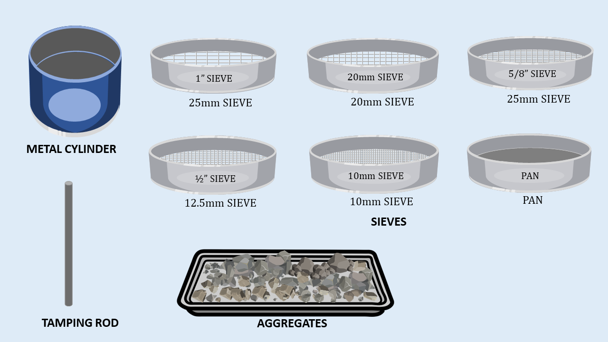
Angularity Number of Coarse AggregateObjective: Determine the angularity number of aggregate. Apparatus used: BS test sieves: 20.0 mm, 14.00 mm, 10.00 mm, 6.30 mm, 5.0 mm, a balance of capacity 10kg and accurate to 1, a metal cylinder (150mm * 150mm). Materials Used: Aggregates 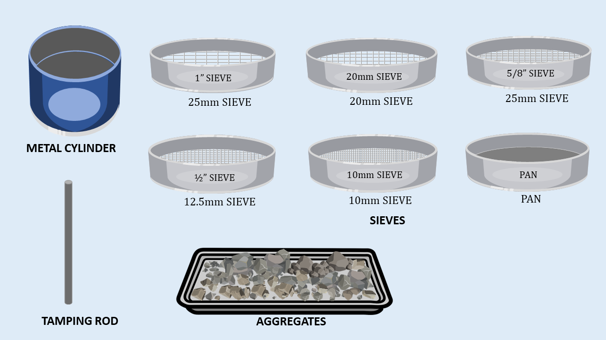
Step
1


Step
2
 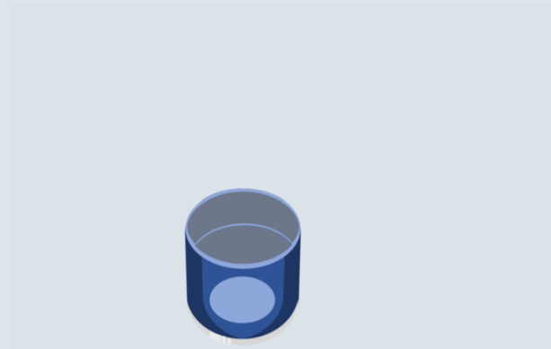
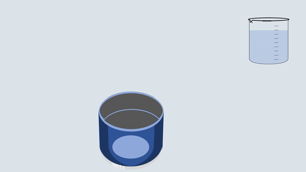
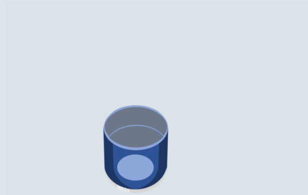
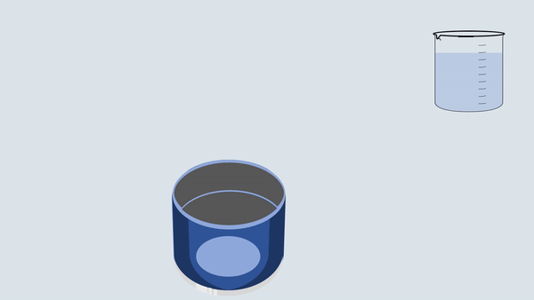
Step
3


Step
4


Step
5


Step
6


Step
7


Step
8


Step
9
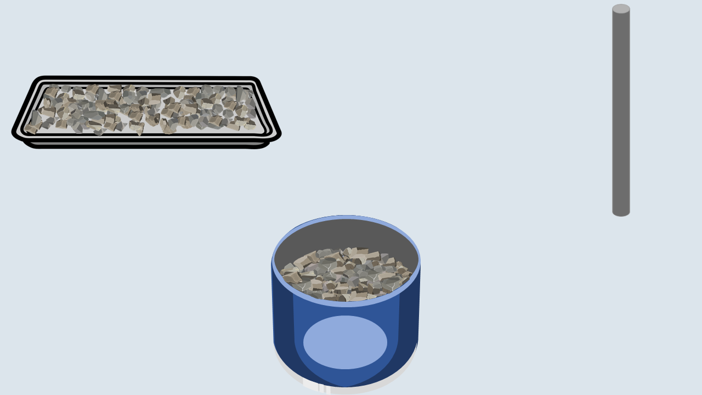
 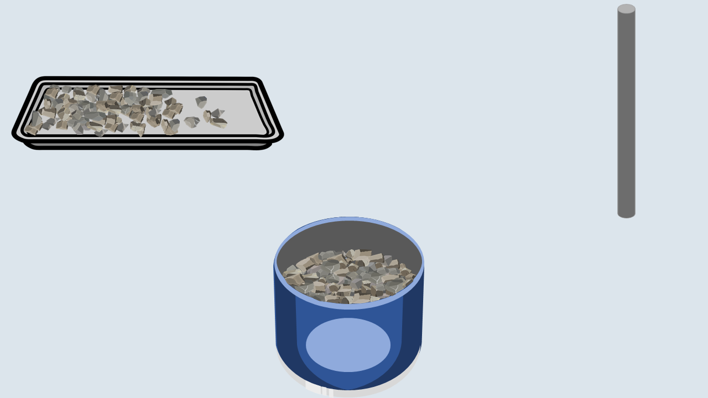
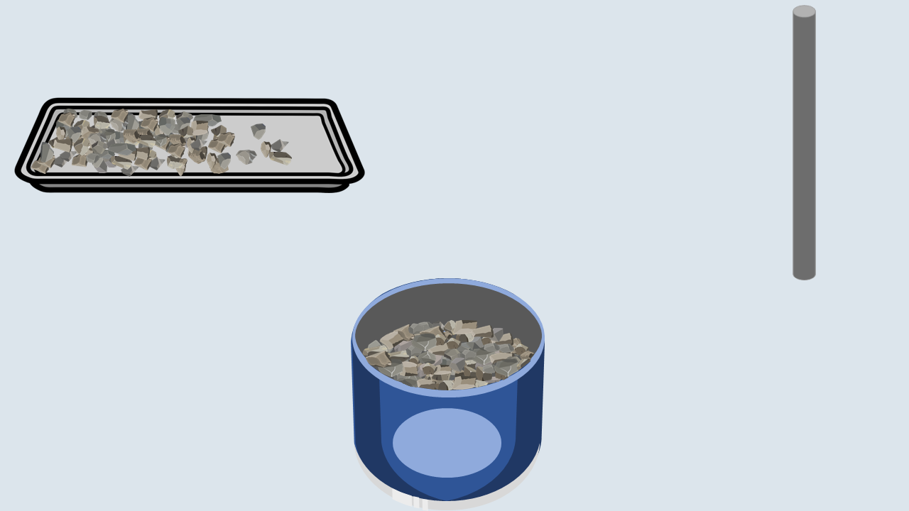
 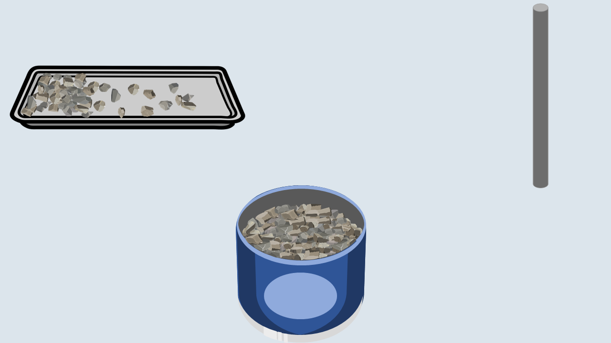
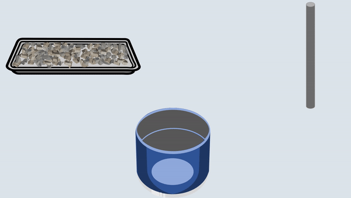
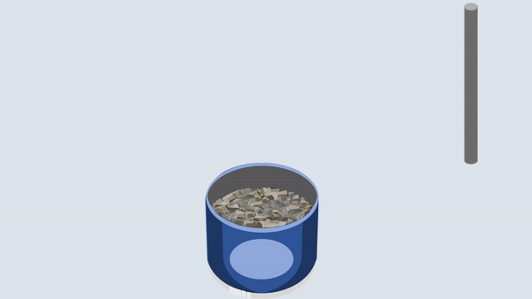
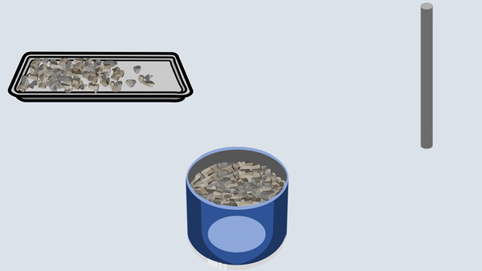
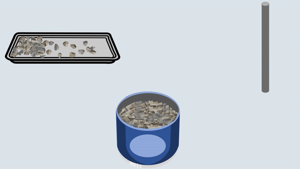
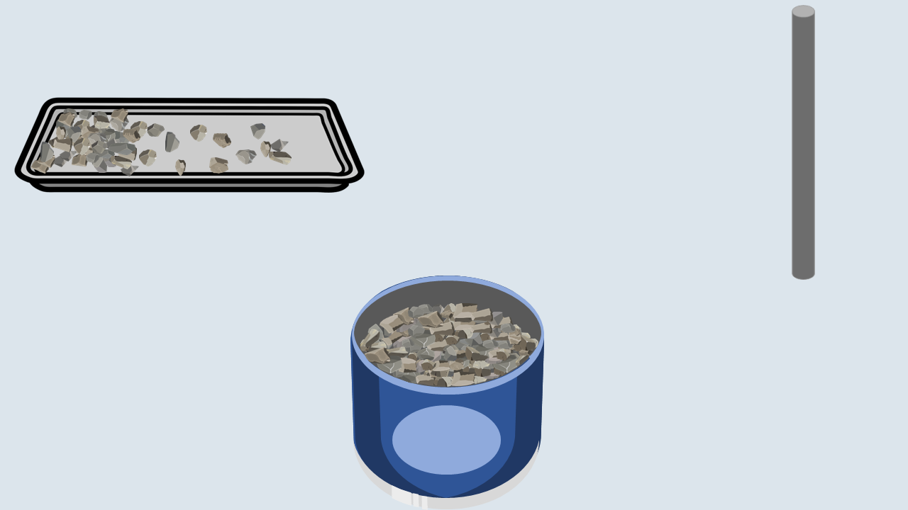
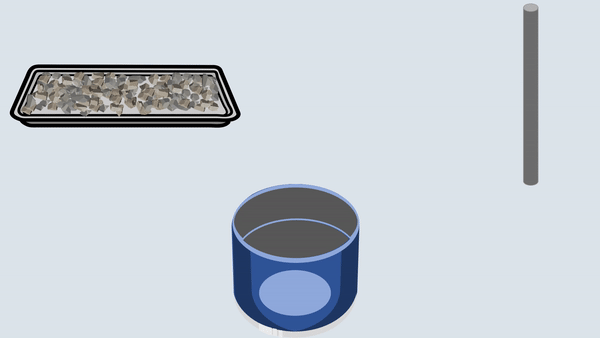
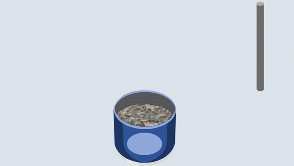
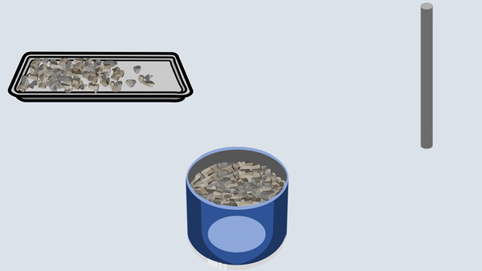
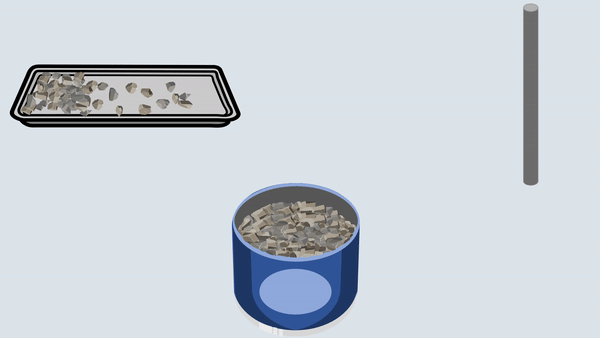


Step
10
 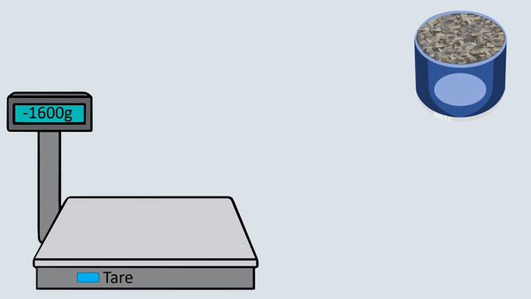
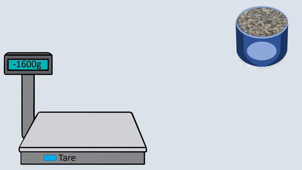
Step
11
Repeat the same procedure for the second set of observations. Conclusion- According to IS: 2386 (Part 1)-1963, the given sample of coarse aggregate can be considered suitable for construction purposes. The general range of angularity number for aggregate used in construction is 0-11. More is the angularity number, less workable is the concrete mix.  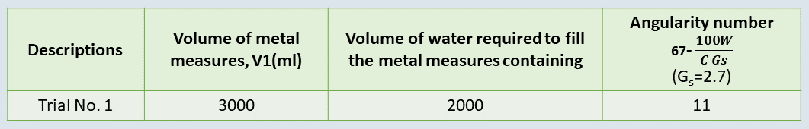
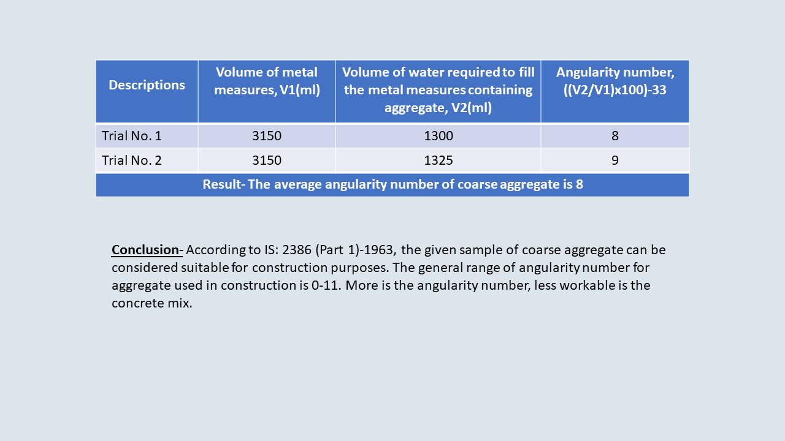
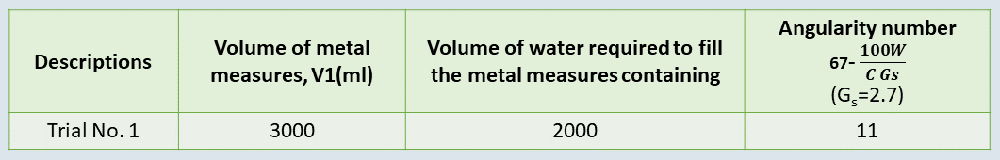
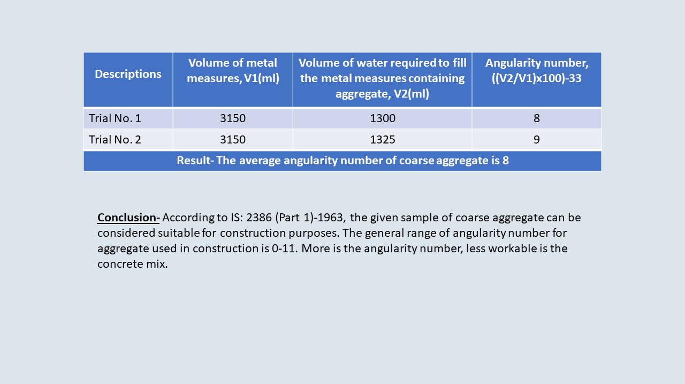

|